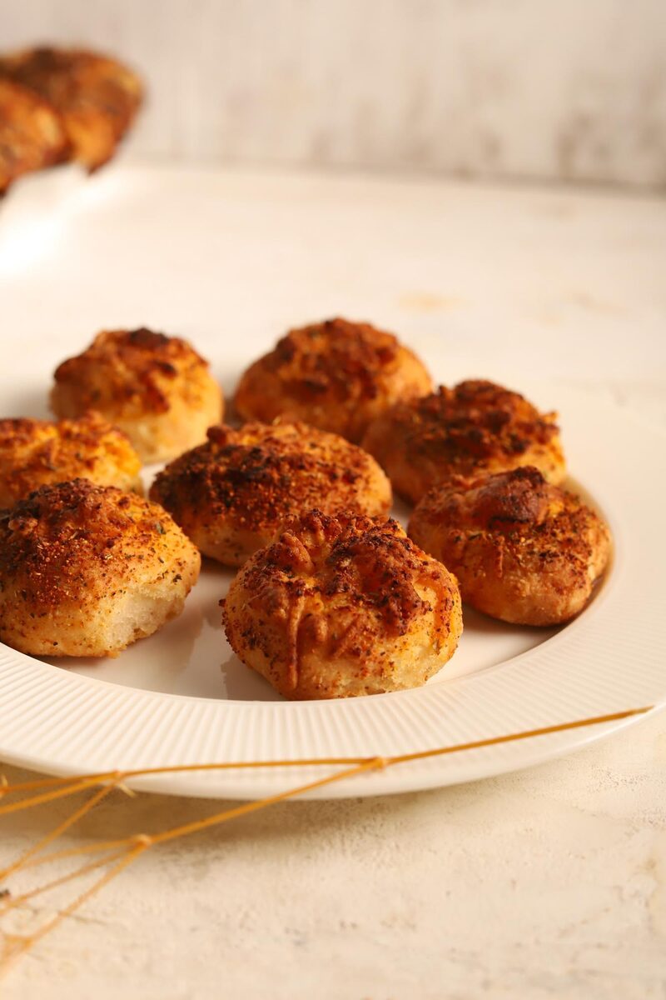
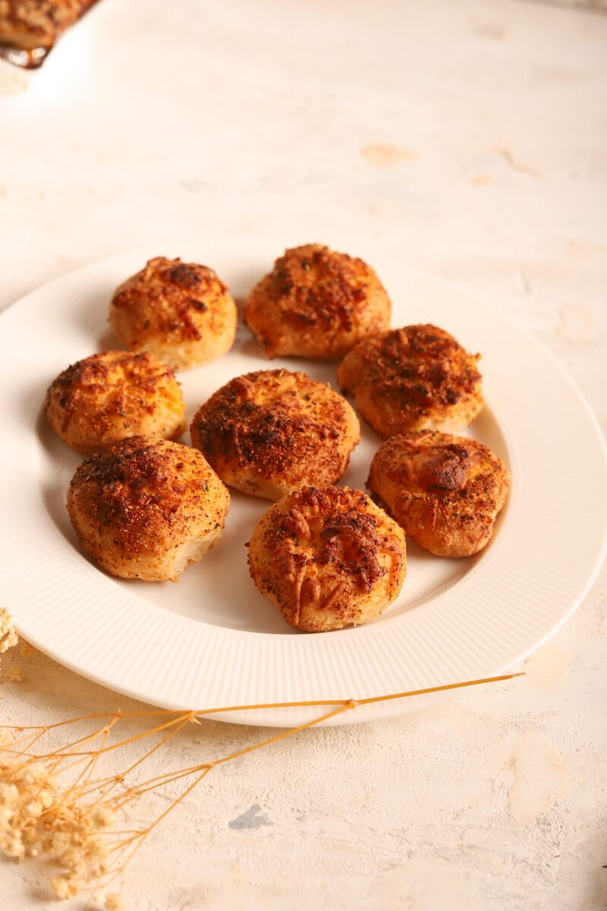
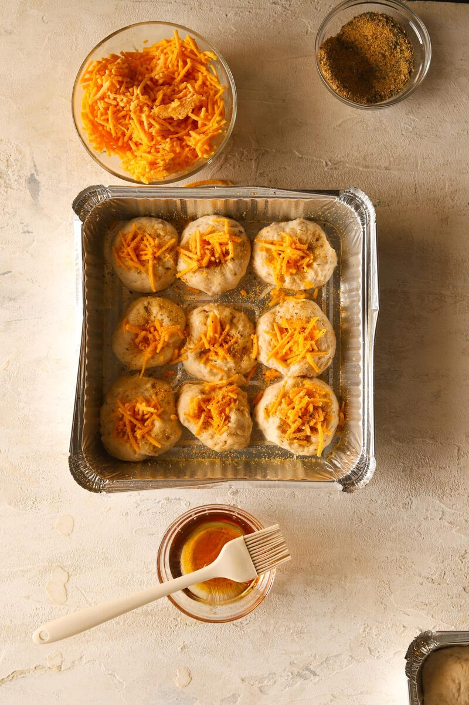

Cheesy Rolls
Soft, pillowy gluten-free dough balls with a little well of melty vegan cheese pressed into the top and a scatter of garlic and herbs.
Skip to recipe ↓Soft, pillowy gluten-free dough balls with a little well of melty vegan cheese pressed into the top and a scatter of garlic and herbs. They pull apart warm and disappear fast. I leave the oil and maple out of my usual dough so these stay properly savory.
Cheesy Rolls

Ingredients
The dough
- 216g Tapioca flour
- 198g Potato starch
- 168g Rice flour
- 108g Oat flour
- 30g Psyllium husk powder
- 8g Xanthan gum
- 7.5g Fine sea salt
- 300g Water (for psyllium)
- 96g Water (for dough)
- 288g Full-fat coconut milk
- 7g Vanilla
- 9g Instant yeast
To finish
- Shredded vegan cheese
- Garlic (granules or finely grated) + dried herbs, to sprinkle
Instructions
- Gel the psyllium. Whisk the psyllium powder into the 300g water and leave it for a couple of minutes until it sets to a thick gel.
- In a large bowl, stir together the tapioca, potato starch, rice flour, oat flour, xanthan gum, salt, and yeast.
- Add together the coconut milk, the 96g dough water, and the vanilla.
- Add the psyllium gel and mix until a smooth, soft dough forms. Knead for a few minutes until springy and it holds a ball.
- Roll & prove. Divide into 12 even pieces and roll into smooth balls. Sit them on a lined tray, cover, and prove until puffy — about an hour.
- Press your thumb into the top of each one to make a little well.
- Tuck a pinch of shredded vegan cheese into each dimple.
- Sprinkle over garlic and herbs.

- Bake at 350°F for about 20 minutes, or until golden brown and the cheese is melted. Cool a few minutes before diving in.
Tip: Want them to stay soft longer? Brush the tops with a very small amount of oil — just enough to keep them tender the next day. They’re best warm, while the cheese is still gooey and stretchy.
The secret to gluten-free bread that actually holds together
Here’s the thing most people get wrong about gluten-free bread: they treat it like wheat bread with a flour swap, and it never works. Gluten is what gives normal dough its stretch — the elastic web that traps the gas from the yeast and lets bread rise tall and chewy. Take it away and you’ve got no net to catch those bubbles. That’s why so much GF bread comes out dense and crumbly.
The fix in this recipe is psyllium husk. When you whisk it into water it forms a thick gel, and that gel does gluten’s job — it gives the dough stretch, holds onto the gas the yeast produces, and keeps everything springy instead of sandy. Don’t rush this step: give the psyllium a couple of full minutes to set before it goes into the dough, or you won’t get the structure you’re after. It’s the single most important thing in the whole recipe.
Why this flour mix works
Bread wants chew and structure, so this blend leans different than a cake one. Tapioca flour brings that pleasant stretch and a bit of chew. Potato starch and rice flour build the body and softness. Oat flour rounds it out with a wholesome flavor and a little more substance. Together with the psyllium and xanthan, they give you a dough you can actually roll into a smooth ball with your hands — something GF bakers rarely get to say.
Proving gluten-free dough
Don’t expect this dough to double in size and balloon the way a wheat dough does — GF doughs rise more modestly. What you’re looking for is puffy: the balls should feel lighter and look visibly plumper, usually about an hour in a warm, draft-free spot. If your kitchen is cold, set the tray somewhere gently warm (near, not on, the oven) to keep the yeast happy. Rushing the prove is the fastest way to a heavy roll.
Serving, storing, and making ahead
These are at their absolute best warm from the oven, when the cheese is still gooey and the inside is soft and steamy. To keep them tender the next day, brush the tops with a whisper of oil after baking. Store leftovers in an airtight container and reheat for a few minutes in a warm oven — a quick reheat brings the melt and the softness right back, where a microwave tends to make them gummy. You can also shape and prove the balls, then bake fresh when you want them; the smell of these coming out of the oven is worth timing around.

All vegan & gluten-free treats
Baked fresh at Sensible Bakery, delivered straight to your door.
Shop at Sensible →